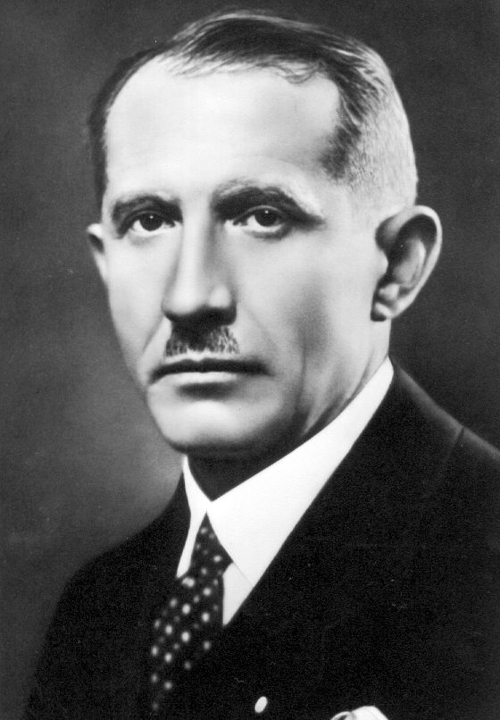
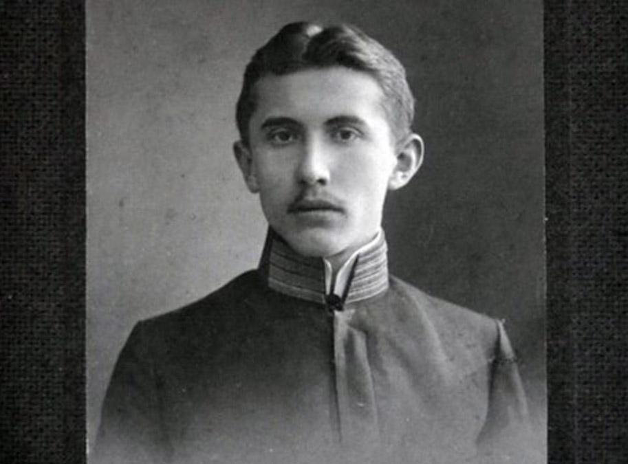
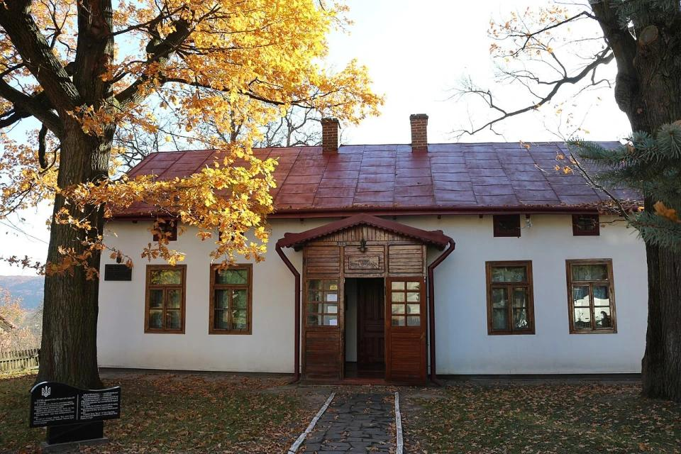
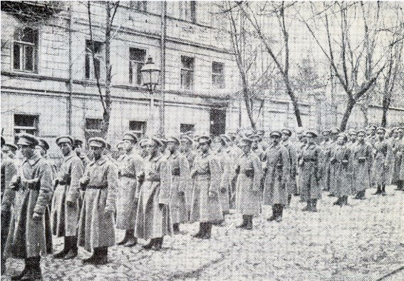

01 · Військовий
Люди стають військом
Коновалець очолював Січових стрільців Армії УНР. За назвою підрозділу стояла щоденна потреба зібрати людей, налагодити командування й утримати спільну мету.
Українська історія · особистості
—
Як юнак із галицького села став командиром у Києві та об’єднав людей, розділених кордонами? Історія Євгена Коновальця — про військо, довіру й боротьбу за власну державу.

Від знайомого імені — до зрозумілої історії
На честь нього називають вулиці, але табличка не пояснює головного: що саме він зробив і чому це мало значення. Спробуймо побачити три ролі однієї людини — та простежити, як кожна виростала з попередньої.
01 · Військовий
Коновалець очолював Січових стрільців Армії УНР. За назвою підрозділу стояла щоденна потреба зібрати людей, налагодити командування й утримати спільну мету.
02 · Організатор
Після визвольних змагань він працював над об’єднанням українського руху. Створення організацій стало іншим способом продовжувати справу, для якої вже бракувало власної державної опори.
03 · Людина
Навчання, родина, полон і переїзди допомагають зрозуміти його вибір. Біографія цікавіша за перелік посад, коли в ній помічаємо обставини та ціну рішень.
1891–1914 · Зашків і Львів

Євген Коновалець народився в Зашкові поблизу Львова. Навчався в українській академічній гімназії, а 1909 року вступив на правничий факультет Львівського університету. Його майбутня військова кар’єра не була прямим продовженням професійного навчання: спочатку він готувався до цивільного фаху. Біографічна довідка ЕСУ.
Батько був директором школи, мати — вчителькою. У гімназії на Коновальця впливав педагог Іван Боберський, а у Львові він відвідував історичні заняття Михайла Грушевського. Це середовище поєднувало освіту з громадською діяльністю: знання про минуле ставали підставою замислитися над майбутнім українців. Нарис УІНП «Мистецтво єднати».
Молодий Коновалець долучався до роботи «Просвіти», зокрема до відкриття її осередків. Тут важлива сама форма участі: спільну справу потрібно було організувати поруч із домом, домовитися з людьми й підтримувати її після першої зустрічі. У цьому досвіді вже можна побачити рису, яка згодом стане центральною в його біографії, — увагу до об’єднання людей.
Читаючи про ці роки, варто уявляти не готовий історичний монумент, а студента в середовищі вчителів і громадських діячів. Війна різко змінить масштаб його відповідальності. Проте навички співпраці та звичка мислити ширше за особисту кар’єру виникли ще до фронту.

1914–1919 · Визвольні змагання
У 1912 році Коновалець проходив військову службу, а наступного року повернувся до навчання. Коли почалася Перша світова, зголосився до Українських січових стрільців, проте його мобілізували до 19-го полку австро-угорського ландверу. У 1915 році він потрапив у російський полон. Хронологія служби за матеріалом УІНП.
У 1917 році Коновалець прибув до Києва й долучився до формування стрілецької частини з українців, колишніх військовополонених. У січні 1918-го став її командиром. Для галичанина це означало участь у державотворенні далеко від рідного села: спільна українська справа виходила за межі одного регіону. УІНП про його роль у війську УНР.
Історія підрозділу не була безперервним зростанням. У травні 1918 року стрільців роззброїли, а в серпні їхнє формування відновилося в Білій Церкві. Ця перерва нагадує, наскільки нестійкими були умови, у яких доводилося будувати армію. Військова частина могла втратити зброю й організаційну основу, але зберегти людей, здатних зібратися знову.
Тому слово «командир» у цій біографії означає більше за звання. Поруч із бойовою діяльністю стояли відповідальність за підлеглих і здатність втримувати структуру під час політичних змін. Без цього важко зрозуміти наступний етап: після поразки визвольних змагань саме організаційна робота вийшла для Коновальця на перший план.

1920–1938 · Організаційна праця
Після поразки визвольних змагань питання змінилося: як продовжувати боротьбу, коли немає власної держави та її армії? У 1920 році Коновалець став одним з організаторів Української військової організації (УВО), яку згодом очолив. Його діяльність перемістилася у площину підпільної та еміграційної політики. ЕСУ про УВО та Коновальця.
У січні–лютому 1929 року у Відні відбувся установчий конгрес ОУН. Нова організація об’єднала кілька націоналістичних середовищ; головою її Проводу обрали Коновальця. Заснування ОУН варто розуміти як спробу створити спільний політичний центр, а не просто зміну назви попередньої структури. Історія організації в Encyclopedia of Ukraine.
Його робота мала й міжнародний вимір: він розвивав закордонні інформаційні осередки та зв’язки з українськими ветеранськими організаціями у США й Канаді. Канадська енциклопедія про ці контакти. Для руху без власної держави такі мережі давали можливість підтримувати спілкування між людьми, розсіяними різними країнами.
Спільною метою залишалася незалежна Україна. Водночас історію політичного руху слід читати з увагою до його методів, ідей та внутрішніх суперечностей. Пояснення мотивації діяча не звільняє від критичних запитань. Воно допомагає бачити, чому в міжвоєнний час він обирав саме організаційну боротьбу і на що сподівався.
«У вогні перетоплюється залізо у сталь, у боротьбі перетворюється народ у націю».
Приватне життя · Європа
Дружину Коновальця звали Ольга, сина — Юрій. У 1922–1929 роках він мешкав у Берліні, у 1929–1936-му — в Женеві, згодом у Римі. Ця географія показує інший бік знайомого портрета: значна частина його діяльності відбувалася в еміграції, поза Україною. Родинні відомості та місця проживання.
Поруч із назвами організацій легко загубити звичайні людські запитання: де твій дім, як підтримувати близькість із рідними, що означає працювати для країни, у якій не живеш? Ми не можемо вигадувати його особисті відповіді. Проте самі переїзди допомагають відчути відстань між політичною метою і щоденним життям.
Так біографія перестає бути лише послідовністю посад. Її можна читати і як історію зв’язків: родинних, військових, громадських. Частина цих зв’язків виникала на місці, інші доводилося підтримувати через кордони. Саме тому за словами «організатор» і «емігрант» варто бачити не абстрактні означення, а різні сторони одного життя.
Історія знайомої назви
Тому що назва пішла від пізнішої течії руху. Вона не визначає, хто був його засновником, і не є мірилом історичної ваги Коновальця.
01 · Спершу — спільна організація
Після його загибелі організацію очолив Андрій Мельник. У 1940 році вона розкололася на два крила, пов’язані з Мельником і Степаном Бандерою. Отже, Коновалець не очолював «бандерівську» фракцію: вона постала вже після його смерті. Енциклопедична історія розколу.
02 · Потім — назва прихильників
В історичному значенні «бандерівці» — прихильники Бандери та відповідного крила ОУН. Тому поширене слово не замінює всіх попередніх етапів руху. Назва описує конкретну політичну належність, а не всіх українців. Пояснення терміна в ЕСУ.
03 · Далі — пропагандистське розширення
Радянська пропаганда надала слову негативного забарвлення та поширювала його на національно свідомих українців. Сучасна російська пропаганда також використовує його значно ширше за реальну причетність до організації. Це один із чинників упізнаваності назви. Академічне дослідження, с. 484–485.
Розрізняймо значення. Історичне означення прихильників певної течії та ворожий узагальнювальний ярлик — різні способи вживання слова. Воно не є образою саме по собі: значення й тон залежать від контексту. Тому заснування ОУН Коновальцем і поширення назви «бандерівці» пояснюють різні етапи цієї історії.
1938–2026 · Історична пам’ять
в Роттердамі Коновалець загинув унаслідок вибуху. Замах здійснив агент радянського НКВС Павло Судоплатов. Його життя обірвалося до Другої світової війни й до розколу створеної за його участі організації. Ця послідовність важлива: пізніші події не варто автоматично переносити на його власну біографію. Обставини загибелі в ЕСУ.
Після смерті Коновальця поховали в Роттердамі. його останки перепоховали в Україні, на Національному військовому меморіальному кладовищі. Тож давні довідки про місце поховання вже потребують уточнення. Подія додала до історії еміграції новий розділ — повернення, здійснене через багато десятиліть після загибелі. Офіційне повідомлення про церемонію. Відомості перевірено 19 жовтня 2026 року.
Пам’ять стає змістовнішою, коли за назвою вулиці з’являється історія. Музей дає для цього конкретну точку входу: дім, документи та послідовність подій, яку можна простежити самостійно.
Музей заснували 1990 року в родинному будинку, а 1993-го він увійшов до структури Львівського історичного музею. Три експозиційні кімнати присвячені раннім рокам, військовій діяльності та історії УВО й ОУН. У 1991 році в селі встановили пам’ятник; після пошкодження його відновили. Сторінка музею з описом експозиції.
Документи та фотографії варто читати разом. Портрет показує зовнішність, а підпис, лист або датована довідка допомагають установити обставини. Так ми поступово відрізняємо перевірений факт від пізнішого уявлення про людину.
Порівнюйте дату, місце та підпис: кожне зображення має власний контекст.
Поглянути ближче
Відкрийте картку, щоб побачити, що ховається за коротким фактом.
До університету Коновалець вступив 1909 року. Це нагадує: біографія не починалася з готової військової ролі. Порівняйте портрет в однострої із пізнішими знімками — і подумайте, як війна змінює траєкторію цивільного життя. Джерело: ЕСУ.
У 1914 році він прагнув вступити до Українських січових стрільців, а згодом очолив Січових стрільців у Києві. Подібність назв не робить ці військові частини тотожними: завжди перевіряйте час і місце подій. Джерело: УІНП.
У 1928 році вийшли його «Причинки до історії української революції». Це можливість читати про події очима учасника. Спогади особливо цікаво зіставляти з іншими джерелами: автор знає власний досвід, але має власний погляд. Джерело: Encyclopedia of Ukraine.
Музей у Зашкові відкрили до проголошення незалежності України. Його історія показує, як повернення імені у громадську пам’ять набуває матеріальної форми: у будинку з’являється експозиція, а особиста адреса стає місцем спільного вивчення минулого. Джерело: Львівський історичний музей.
Як історичне визначення це некоректно: слово стосується прихильників конкретної течії. Узагальнення приховує різні погляди й біографії людей. У пропагандистському тексті воно може працювати як ярлик; у розмові спершу варто з’ясувати, яке значення вкладає співрозмовник. Історія терміна.
Дослідники описують використання образу «бандерівців» у російсько-українській війні як узагальнювального образу ворога. Частота повторення такого слова говорить про спосіб впливу на аудиторію. Вона сама по собі не встановлює, хто зробив найбільший внесок у створення організації. Дослідження, с. 484–485.
Оберіть одну подію з таблиці нижче й прочитайте відповідне джерело. Запишіть дату, місце та роль Коновальця, потім порівняйте з іншою довідкою. Для фотографії додайте питання про автора й підпис. Такий невеликий маршрут робить читання уважнішим і допомагає помічати неточності.
Хронологія
| Рік | Подія | Період |
|---|---|---|
| 1891 | Народження в Зашкові | Становлення |
| 1909 | Вступ на правничий факультет у Львові | |
| 1917 | Участь у формуванні стрілецької частини в Києві | Визвольні змагання |
| 1918 | Командування Січовими стрільцями | |
| 1920 | Участь у створенні УВО | Організаційна діяльність |
| 1929 | Обрання головою Проводу ОУН у Відні | |
| 1938 | Загибель у Роттердамі | Завершення життєвого шляху |
| 2026 | Перепоховання на Національному військовому меморіальному кладовищі | Вшанування пам’яті |
| 1891–1938 · Життя діяча; 2026 · Повернення його останків в Україну | ||
Читати далі